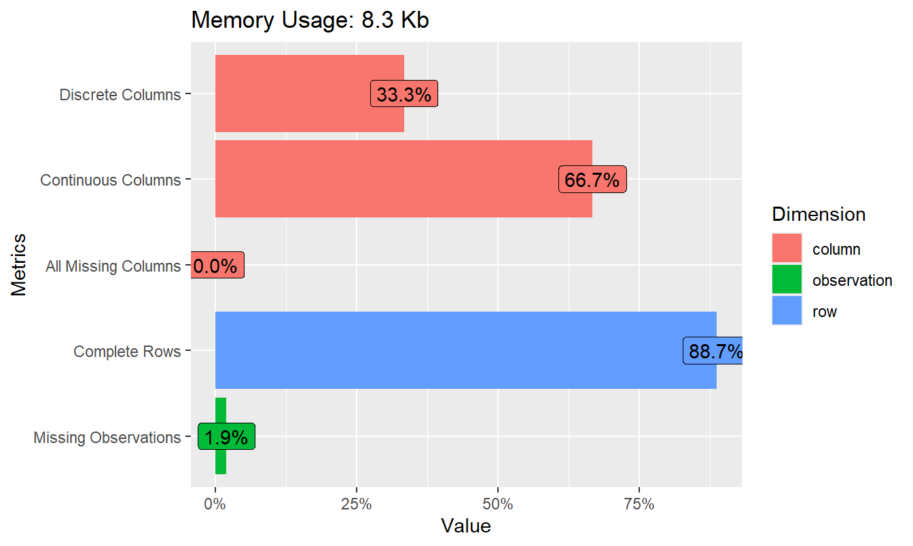
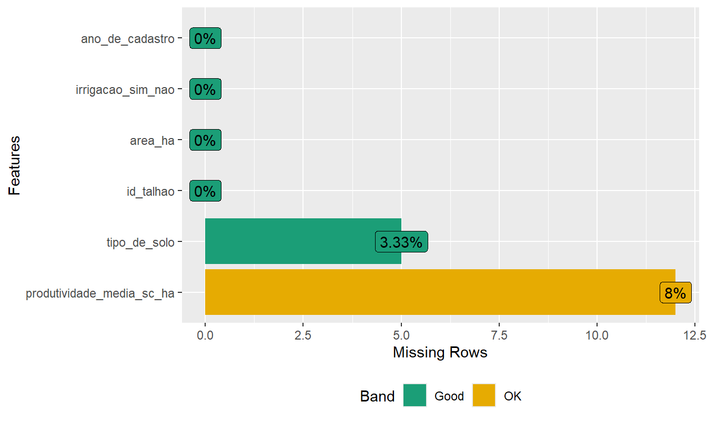

Aula 46. EDA automatizada em 3 pacotes
janitor, skimr e DataExplorer, uma primeira exploração rápida e confiável
Acompanhe o Café com R
Que cada gole desperte uma nova ideia.
Que cada script abra uma nova conversa.
Que o Café com R se torne um ponto de encontro nosso.
SITE OFICIAL > https://jenniferlopes.github.io/meu_site/
Objetivos da aula
- Padronizar nomes de colunas e obter contagens categóricas rápidas com janitor
- Obter uma visão geral completa de todas as variáveis com skimr
- Gerar uma exploração automatizada de estrutura, distribuição e dados ausentes com DataExplorer
- Reconhecer quando a EDA automatizada é suficiente e quando exige investigação manual complementar
Bloco 1
janitor
Conceito, o que o janitor resolve
Contexto: um cadastro de 150 talhões, exportado de uma planilha de crédito agrícola, chega com nomes de coluna contendo espaços, acentuação e parênteses, como
Produtividade Média (sc/ha).Nomes de coluna nesse formato exigem crase em todo o código R,
`Produtividade Média (sc/ha)`, e aumentam o risco de erro de digitação.O pacote janitor padroniza esses nomes para o formato
snake_case, e oferece funções para contagem categórica e verificação de duplicidade.
Código: clean_names() e tabyl()
Output: nomes limpos e contagem categórica
[1] "id_talhao" "area_ha"
[3] "tipo_de_solo" "irrigacao_sim_nao"
[5] "produtividade_media_sc_ha" "ano_de_cadastro" tipo_de_solo n percent valid_percent
Arenoso 38 0.25333333 0.2620690
Argiloso 65 0.43333333 0.4482759
Franco 42 0.28000000 0.2896552
<NA> 5 0.03333333 NA- Os nomes de coluna passam a seguir um padrão único, em minúsculas e sem espaços, o que simplifica todo o código posterior. A função
tabyl()já entrega contagem absoluta e percentual, incluindo os valores ausentes na categoria de solo.
Bloco 2
skimr
Conceito, visão geral rápida de todas as variáveis
O pacote skimr produz um resumo de todas as variáveis do conjunto de dados em uma única chamada, separando estatísticas para variáveis numéricas e categóricas.
Para variáveis numéricas, o resumo inclui média, desvio padrão, quartis e um histograma em miniatura. Para variáveis categóricas, inclui contagem de valores únicos e de valores ausentes.
É o ponto de partida recomendado antes de qualquer análise, pois revela rapidamente tipos de variável incorretos e volume de dados ausentes.
Código: skim()
Output: skim()
| Name | talhoes |
| Number of rows | 150 |
| Number of columns | 6 |
| _______________________ | |
| Column type frequency: | |
| character | 2 |
| numeric | 4 |
| ________________________ | |
| Group variables | None |
Variable type: character
| skim_variable | n_missing | complete_rate | min | max | empty | n_unique | whitespace |
|---|---|---|---|---|---|---|---|
| tipo_de_solo | 5 | 0.97 | 6 | 8 | 0 | 3 | 0 |
| irrigacao_sim_nao | 0 | 1.00 | 3 | 3 | 0 | 2 | 0 |
Variable type: numeric
| skim_variable | n_missing | complete_rate | mean | sd | p0 | p25 | p50 | p75 | p100 | hist |
|---|---|---|---|---|---|---|---|---|---|---|
| id_talhao | 0 | 1.00 | 75.50 | 43.45 | 1.0 | 38.25 | 75.50 | 112.75 | 150.0 | ▇▇▇▇▇ |
| area_ha | 0 | 1.00 | 11.91 | 4.10 | 1.8 | 8.70 | 11.75 | 14.47 | 22.6 | ▂▆▇▅▁ |
| produtividade_media_sc_ha | 12 | 0.92 | 54.62 | 12.69 | 26.7 | 45.75 | 56.40 | 63.48 | 80.4 | ▂▆▆▇▂ |
| ano_de_cadastro | 0 | 1.00 | 2022.09 | 2.01 | 2019.0 | 2020.00 | 2022.00 | 2024.00 | 2025.0 | ▇▃▅▃▇ |
- O resumo mostra que a variável de produtividade tem 12 valores ausentes, e que a área dos talhões está concentrada entre 8 e 16 hectares. Essa visão geral orienta quais variáveis merecem investigação mais detalhada.
Bloco 3
DataExplorer
Conceito, EDA automatizada, quando usar e qual seu limite
O pacote DataExplorer gera gráficos padronizados de estrutura, distribuição e dados ausentes com uma única linha de código cada, sem exigir que o analista escreva o
ggplot2manualmente para cada variável.É indicado como primeira exploração de um conjunto de dados novo, especialmente com muitas colunas, quando o objetivo é obter um panorama inicial rapidamente.
Não substitui a EDA manual. Padrões específicos do problema, relações entre variáveis relevantes para a pergunta de pesquisa e valores discrepantes precisam de inspeção dirigida pelo analista.
Código: plot_intro() e plot_missing()
Output: estrutura dos dados e padrão de ausência


- O gráfico de introdução resume a proporção de colunas contínuas e discretas e a completude geral dos dados. O gráfico de dados ausentes confirma que apenas a variável de produtividade apresenta valores faltantes, e em proporção baixa.
Código: create_report(), o relatório completo
A função
create_report()gera um arquivo HTML completo, com estrutura dos dados, distribuições univariadas, correlações entre variáveis numéricas e um resumo de dados ausentes, tudo em um único documento navegável.É especialmente útil para documentar a primeira exploração de um conjunto de dados, e pode ser anexado a um relatório de consultoria como material de apoio.
Quando usar EDA automatizada x EDA manual
| Etapa | Ferramenta indicada |
|---|---|
| Primeiro contato com dados novos | janitor, skimr, DataExplorer |
| Verificação de nomes, tipos e dados ausentes | janitor, skimr |
| Panorama geral de distribuições e correlações | DataExplorer |
| Investigação de padrões específicos da pergunta de pesquisa | EDA manual, ggplot2 dirigido |
| Identificação e tratamento de valores discrepantes | EDA manual |
Bloco 4
Erros Comuns
Erro comum 1, usar só o relatório automatizado sem investigar manualmente
Tratar o relatório do DataExplorer como análise final, sem aprofundar nas variáveis relevantes para a pergunta de pesquisa, entrega um panorama superficial.
O relatório automatizado indica onde olhar, ele não substitui a interpretação dirigida pelo objetivo da análise.
Erro comum 2, aplicar clean_names() sem revisar o sentido semântico do nome
A padronização automática de nomes pode gerar abreviações ambíguas quando o nome original é longo ou contém termos técnicos específicos.
Sempre conferir o resultado de
clean_names()e renomear manualmente quando o nome padronizado perder clareza.
Erro comum 3, ignorar o padrão de dados ausentes revelado no relatório
Constatar que uma variável tem dados ausentes e prosseguir para a análise sem investigar se a ausência segue algum padrão, associado a outra variável, pode enviesar os resultados.
O gráfico de dados ausentes do DataExplorer é o ponto de partida, não o encerramento dessa investigação.
Resumo: EDA automatizada
| Pacote | Função central | O que entrega |
|---|---|---|
| janitor | clean_names(), tabyl() |
Nomes padronizados, contagem categórica |
| skimr | skim() |
Resumo estatístico de todas as variáveis |
| DataExplorer | plot_intro(), plot_missing(), create_report() |
Panorama de estrutura, distribuição e ausência |
Obrigada!

Continue praticando e explorando.
Esta aula é parte do projeto Café com R. É open source. Use, compartilhe e adapte.
Siga o Café com R
Que cada gole desperte uma nova ideia.
Que cada script abra uma nova conversa.
Que o Café com R se torne um ponto de encontro nosso.
SITE OFICIAL > https://jenniferlopes.github.io/meu_site/

Jennifer Lopes | Café com R